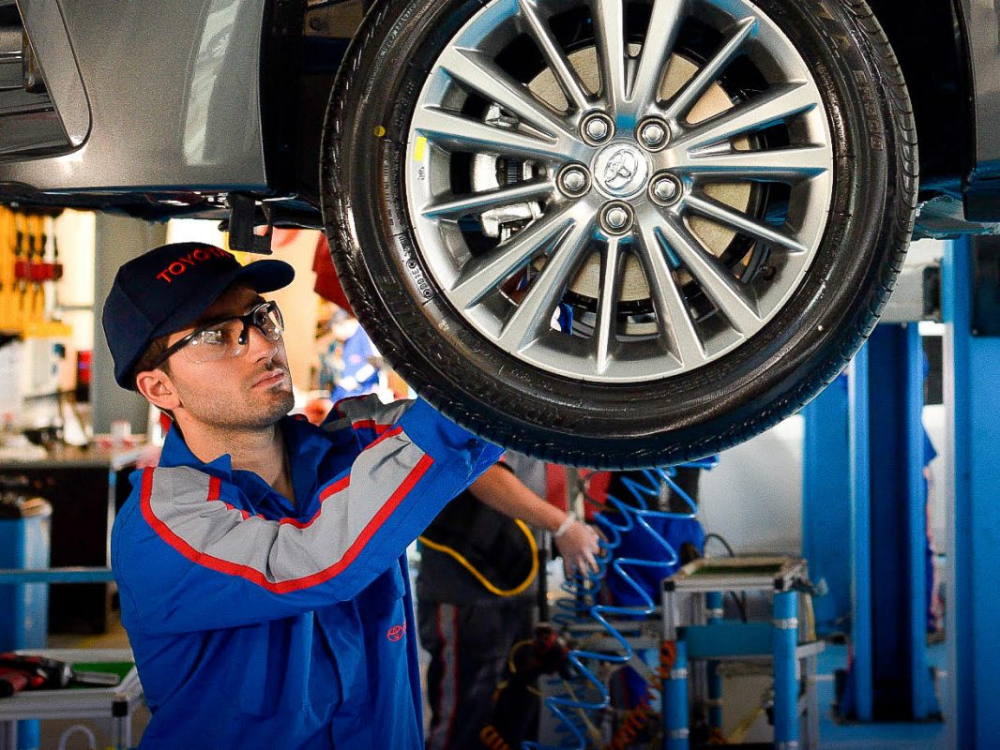
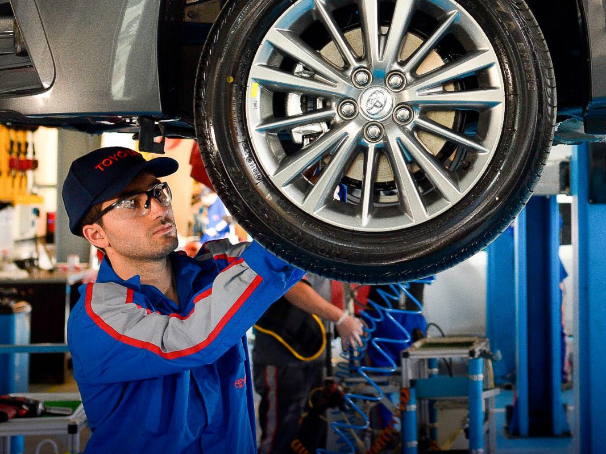

Caracteristicas de los servicio
Servicio de 10.000kms, 30.000 kms, 50.000kms, 70.000 kms, 90.000 kms. El trabajo que se desarrollara en los servicio mencionados cuenta con cambio de aceite de motor, cambio de filtro de aceite, limpieza de filtros de aire y de aire acondionado. Balanceo y rotación de cubiertas, control de tren delantero, trasero, de chapones ailantes y cableado electrico (en el exterior y el exterior), chequeo de luces, bateria, escobillas, bateria y para finalizar un lavado del interior, exterior y motor de su vehiculo.
Servicio de 40.000 kms, 80.000 kms. El trabajo a desarrollar en estos dos servicio es un poco mas largo por ser servicios pesados, en donde lo que vamos a realizar es el cambio de aceite, filtro de motor, aire y aire acondicionado. Cambio de aceite de diferencial en los vehiculos Hilux, Sw4, Hiace, Rav y Land Cruice. Si son veiculos 4x4 se reemplaza el aceite de diferencial delantero y caja de transferencia, y aceite de caja en las dos versiones manuales y automáticas. Rotaciòn y balanceo de cubiertas. Por últimos el cambio de fluidos de frenos, control de luces escobillas y bateria para poder finalizar con un lavado exterior de carroceria, interior y motor.
Servico de 100.000 kms. En el trabajo de este servicio es particular poque lo realizado sera, cambio de aceite motor , filtro de aceite y aire acondicionado, rotacion y balanceo de cubiertas, control de frenos delanteros traseros, cambio de fluido de frenos, control de parte inferior y superior del vehiculo, control de bateria, escobillas y luces del interior y exterior. Para finalizar un lavado, del interior, motor y exterior.
 
